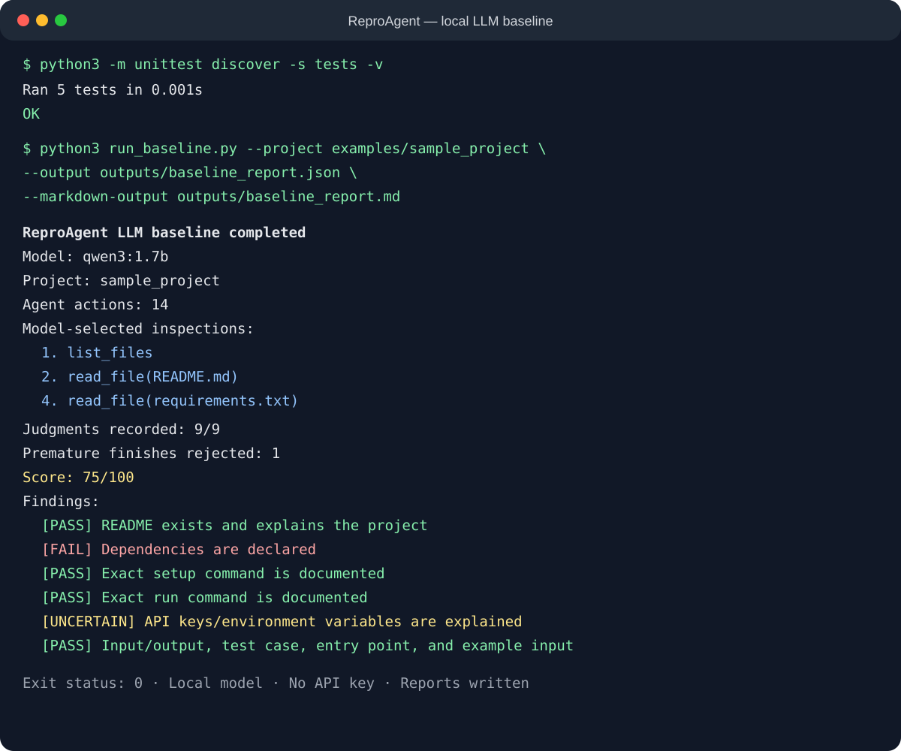

| Student name | Venkata Sai Akshith Reddy Ganta |
| Project title | ReproAgent: A Local LLM Agent for Auditing AI Project Reproducibility |
| Repository / notebook link | https://github.com/akshith-22/reproagent-capstone |
| Configuration location | .env.example (optional; no key required) |
AI/ML repositories often omit details needed to rerun their results. ReproAgent inspects a project and produces a scored, evidence-based reproducibility report. The intended user is a student, reviewer, or developer preparing a project for independent execution. Input is a local repository containing source and documentation. Output is JSON and Markdown with per-criterion status, evidence, recommendations, a tool trace, and a 0–100 score. Success means correctly classifying README quality, dependencies, setup, run command, environment variables, input/output locations, test case, entry point, and example input. False classifications, unsafe reads, or failure to terminate are failures.
Reproducibility matters for grading, collaboration, and trustworthy AI, but manual review is repetitive and inconsistent. Agentic AI fits because a model must select tools and files, observe results, revise its next action, make judgments, and decide when the audit is complete. Fixed keyword checks cannot interpret varied repository structures and natural-language instructions. Semester scope includes local Python repositories, autonomous read-only inspection, grounded findings, safe sandboxed command verification, and failure diagnosis. Remote authentication, automatic repair, arbitrary operating systems, GPU-heavy projects, and scientific-correctness guarantees are out of scope. A bounded 1.7B local model keeps the project feasible and free to reproduce.
The baseline uses Qwen3 1.7B through Ollama and Python's standard library; no API key is required. The model receives four tools: list_files, read_file, record_check, and finish_audit. It chooses files, incorporates observations, records nine judgments, and completes the report. The host confines paths, limits files/actions, rejects premature completion, and computes the score. Decisions about evidence and classification come from the LLM; guardrails bound its actions. Code is in run_baseline.py and repro_agent/llm_agent.py; tests are under tests/.
Input is examples/sample_project/. It contains a README, dependency file, executable, example input, and saved output, but intentionally omits install and environment/API-key guidance. Expected behavior is to pass dependencies and fail setup and environment guidance. The actual run made 14 agent actions, selected README.md and requirements.txt, recorded all nine judgments, rejected one premature finish, and scored 75/100. It correctly classified six criteria but incorrectly failed dependencies, incorrectly passed setup, and marked environment guidance uncertain. The model/tool loop worked and exposed measurable errors. Evidence is in evidence/baseline_run.png and outputs/.
Requirements are Python 3.10+, Ollama, about 1.4 GB, and internet for the one-time download. No key is needed. Install Ollama from https://ollama.com/download, start it, and run ollama pull qwen3:1.7b. Then execute:
python3 run_baseline.py --project examples/sample_project --output outputs/baseline_report.json --markdown-output outputs/baseline_report.mdInput is examples/sample_project/; output appears in the terminal and outputs/. Run five offline tests with python3 -m unittest discover -s tests -v. Inference is hardware-dependent but normally under two minutes on Apple Silicon.
I will label at least 30 small public or instructor-approved repositories with a second reviewer. I will compare the heuristic, local-LLM baseline, and improved agent using per-check precision, recall, macro-F1, score error, clean-environment execution success, grounded-evidence rate, latency, invalid-tool rate, and termination rate. Improvement means higher macro-F1 and execution success without unsafe commands or unacceptable latency.
The small model shows false positive and false negative judgments, may choose too few files, repeat actions, emit tagged completion text, and cannot verify commands. Next steps are evidence-aware prompting, planner/evaluator separation, safe temporary-environment execution, failure diagnosis, notebook/package-manager adapters, exact line citations, and stronger-model comparison. Path confinement, allowlists, timeouts, action budgets, and an annotation guide will mitigate risks.
The image below records the successful local LLM agent run on September 6, 2026.
